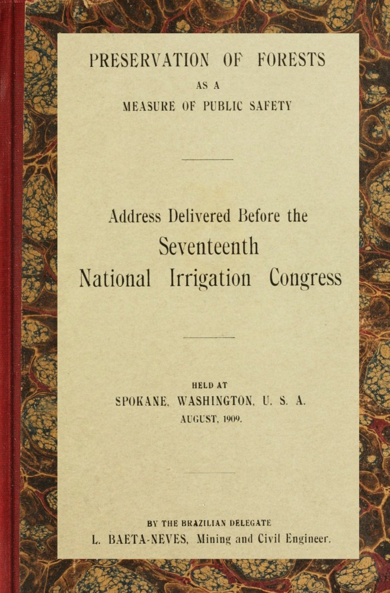

Seventeenth
National Irrigation Congress
HELD AT
SPOKANE, WASHINGTON, U. S. A.
AUGUST, 1909.
BY THE BRAZILIAN DELEGATE
L. BAETA-NEVES, Mining and Civil Engineer.
Address before the 17th National Irrigation Congress, Spokane, Wash.,
August, 1909.
by
L. BAETA-NEVES
Mining and Civil Engineer; Graduate of the Ouro Prete Mining School, Brazil; Chief of the Technical Department of the Directory of Railway and Public Works in Minas Geraes, Brazil; Member of the Historic and Geographic Institute of the same state; Member of the National Geographic Society of Washington; Knight of Columbus; Honorary Member of the Rotary Club of Los Angeles, Cal.; Representative of the Brazilian Government before the Scientific Congresses 16th Irrigation and 3rd Dry Farming in America, and Vice-President and Corresponding Secretary of this Congress; Special Delegate of Brazil before the 17th National Irrigation Congress at Spokane, Wash., where, by selection, he addressed the meeting on behalf of the Foreign Representatives.
I really feel glad and exceedingly honored in coming again before this Congress and my pleasure is great in telling you once more how much I appreciate the warm welcome of the North American people, and how much I have enjoyed the pleasant stay in this most hospitable city.
I come now with the same feelings and sentiment that I tried to translate to you on the opening session of this most important meeting full of very valuable lessons from any view point; on that day I had the great honor of speaking to you on behalf of the foreign delegates of this convention bringing greetings from the Brazilian Government and from the different nations here represented. But now, allow me to say, Americans, and distinguished representatives of foreign continents and islands, that translating the good feelings and altruistic sentiment of the people of the countries of Columbus, I am going to speak with my whole soul, my whole heart, on behalf of the sacred rights of humanity, addressing you on a subject very dear to me in which I have been deeply interested since my childhood; a subject on which I have learned a great deal from two men of universal reputation, who, for the glory[2] of the western hemisphere, were born under the purest sky of America—I mean Roosevelt and Gifford Pinchot. I stand for the forest, for the preservation of forests as a measure of public safety. My paper is in part an extract of a report that I sent to Brazil to be read this week at the request of the 4th International American Medical Congress, held now at Rio De Janeiro “on the most efficacious means of preventing and lessening the effects of periodical droughts.” In that paper I wrote about the lessons of the Irrigation Congress, which lessons we are already profiting by, having improved the Irrigation projects of which I wrote the address printed in the proceedings of the 16th National Irrigation Congress, last year. I am pleased to say that in this report I emphasized also the great work which has been done by the dry farming Congress, whose lessons are the best to teach the people of the arid district of the world, how to use profitably by the water, almost always so expensive and difficult to be obtained in such districts. You will find on the last proceedings of the dry farming Congress at Cheyenne, a paper of mine on the combination of irrigation and dry fanning processes, which combination I think will give the best results in rendering more fit to sustain life a region subject to drought. To the medical Congress, I suggested that a branch of the dry farming of America should be established in Brazil according to the wishes of its indefatigable secretary my good friend Mr. John T. Burns. Being requested by his excellency Governor Norris, of Montana to work in Brazil, as a vice-president and corresponding secretary of the Congress I feel exceedingly honored in giving my very best service to my brothers of North America, assuring them that they can count upon my great admiration for your country, where I am living for one year with my family always in close touch with the American family and people. Allow me to say, ladies and gentlemen, that keeping the same love for my native land, in my heart, will have for ever a warm room for the American people. But let me stop, ladies and gentlemen, of speaking of my feeling that, in spite of my sincerity, I cannot express by words as they come from the bottom of my heart; the whole session would be too short for translating them and[3] I must go back to the subject of my paper. In my report to the International Medical Congress I wrote also about the Cactus of Luther Burbank, of California, and incidentally I called the attention of the Brazilian Engineers to the recent process in which the English government is now interested, facilitating the atmospheric precipitations for small water supply near the coast, causing the deposit of dew as has been practiced in Gibraltar. I have read something about this process on an interesting paper of Mr. George Hurbard read this year on March 3rd, before the Royal Society of Arts, London: I wrote too about the forests considering them like I am about to do.
The importance of forests as protectors of mankind is an incontrovertible fact, and there is no spirit, less observing as it may be, that has not noticed, even slightly, some influence of the trees in benefitting life.
At different times I have treated this important subject that impressed me so much, in the national and foreign press and in public addresses here in America, several times discussing the influence of the trees upon our life. Once speaking about the combined work of medicine and engineering in the noble and humanitarian campaign to improve the means of life on the surface of this planet, especially to preserve and increase the vigor of the people, I said in part:
“Life progressively is becoming very difficult to be preserved in good conditions because of the incessant exhaustion of elements that are favorable to it on the surface of the earth, where a continuous transformation is observed all over.
“The forests, the best protectors of our life, are going fast, and from the modification that their disappearance is bringing to the climate and to the natural conditions all over the earth, will come serious troubles to the solution of the sanitary problems in the future.
“It is necessary to use intelligently so important elements of life, without so barbarous destructions, because so far as the present scientific knowledge is concerned, there is no doubt, at all, that from the lack of the forest will come the greatest modifications in the meteorological conditions of the earth, and you know, the meteorological conditions—the weather—has[4] the most positive influence on our life. This influence does not appear only on the health conditions, but, too, in the most complicate social phenomena.
“The old proverb—‘Man is the son of his environments’—is a translation of a truth scientifically demonstrated, proving the weather’s influence. It is true that it means the law of adaptation, but the environments of man depend entirely upon the meteorological conditions. According to this law we could, perhaps, live even under bad conditions of weather, but such condition would bring an unhealthy condition of life, too.
“Professor Dexter, of the University of Illinois, studying the mental and physiological influence of the meteorological conditions, in one of his books, gives a comprehensive study of the question, proving the weather’s influence on the organic and intellectual life, the emotions, the literary sentiments, the individual conduct. He proves principally that the change of meteorological conditions affects the health more than anything else.
“Under bad meteorological conditions we never would have the necessary reserve of energy for the complete activity of life.
“And good meteorological conditions can be guaranteed only by the preservation of forests, that, unhappily for our future, does not receive from the people the deserved attention.”
Since the colonial time many Brazilians have been considering the forests from a sanitary viewpoint. The patriarch of our independence José Bonifacio in 1815 wrote these phrases:
“What other productions of Mother Nature ought to deserve greater attention from the philosophers and statemen than the forests and trees? Trees, wood and timber: Only these words, well meditated upon and understood, are enough to awaken our whole sensibility.”
Besides other reasons there is a powerful one that makes necessary the protection of forest—its great influence upon health. Health is all, and upon it reposes the happiness of people and the greatness and prosperity of the countries.
On account of a rapid progress we must not sacrifice the forests as it has been done in many new countries.
Any progress detrimental to the vital forces of nature, is[5] negative, ephemeral; if one generation profits by it, the following one fatally will suffer its consequences.
This axiom, in my humble opinion, translates better the decline and disappearance of some nations that figured in antiquity than any explanation given by the modern philosophy for the fact; and forethought advises to profit by the practical lesson contained within it, preserving our natural resources in order not to sacrifice to a temporary greatness the best means of preserving life, which means are represented by the forest.
The trees are great regulators of many conditions of life, principally facilitating the atmospheric precipitation and their profit. The aqueous vapors penetrating the cool atmosphere of the forest at the contact of the foliage of the trees, condense resolving into rain or dew; and the water that falls on the soil, protected against evaporation by the shade, having its surface-flow impeded and its absorption facilitated by the roots, penetrates in greatest quantity into the land, guaranteeing the permanency and abundance of the source that it forms.
The rainfall without the protecting vegetation rapidly flows on the surface soil forming the run-off, which takes from the earth the fertilizing humus, excavating the mountain and producing the destructive overflow in the valley.
In the countries where ice and snow do not appear the regimen of the water courses in a great measure depends upon the vegetation that covers the head of the streams; and such an influence is as great as the porosity of the soil is small in the generative basin of the sources. If there is yet controversy which is progressively disappearing with more serious study about some forests’ influences, there is not, all over the earth, any one who can scientifically contest this truth that history and geography, the facts of the past and the observation of the present so clearly confirm. The Nile, which comes from the heart of Africa, born among the virgin forests where fire and men never have penetrated, keeps today, in an average, the same flow that it had when it fertilized Egypt at the time of the Pharaohs.
The effects of forests do not appear in confined zones.[6] Their influence is not bounded by a certain region, and the calamity coming from their devastation passes over the individual property affecting the public welfare. This is an incontestible truth that science demonstrates and facts corroborate. Therefore there is no reason why protection of forest must be concerned to a certain extension, not affecting the private lands.
The individual right ought not to affect the high interests of the Union which ought to save its own future, guaranteeing by the preservation of the natural resources of the country, the general well-being of the present and future generations.
This rational theory, applied to the case of forests, each day gains assent in this country being already accepted in the higher tribunals in favor of the legislation protecting such resources, which legislation is earnestly advocated by President Roosevelt, accordingly it was adopted on March 10, 1903 by the supreme court of Maine, and on April 6th of the same year, the supreme court of the United States sustained it, confirming the opinion of the court of errors and appeals of New Jersey.
To the glory of us Brazilians this principle is the confirmation of a doctrine of which I spoke last here at Albuquerque, promulgated in 1892 by the eminent Brazilian, Dr. Francisco Saturnino Rodrigues de Brito, who wrote:
“The argument against such laws has no reason for being, because the owner of the land is only a steward of the soil that was entrusted to him by the past generations; he is the depository of lands as he is a depository of capital, and thus, as it has a social origin, territorial property must have a social application, in attending to collective interest; and these require the individual effort of each man to preserve and improve on the planet the necessary means of living, among which are the preservation and replantation of forests, that may keep the necessary moisture for regular rainfall and the normal distribution of water, detaining it among their roots and not permitting the destructive overflows that take from the soil the fertilizing humus. The argument has no reason for being, also, because the interest of the family itself requires providence against the prodigal member who steals from his own children[7] the inheritance from the past, giving to this improvident and egotistical father only the income of it; and as it happens with the inheritance, legislative enactment must regulate the question of lands for the interest of the social community that has a great attainment from the Past, and comprehending the Present and the Future.”
The arguments of President Roosevelt are very similar to those of the illustrious Brazilian engineer and the same thing can be said in regard to the reasons presented by the Supreme Court of the United States as quoted by the American President:
“The State, as quasi-sovereign and representative of the interest of the public, has a standing in court to protect the atmosphere, the water and forests either in its territory, irrespective of the ascent or descent of the private owner of the land most immediately concerned.”
I am deeply convinced that the conscientious scruples of a great many of our eminent legislators and loyal men in accepting this doctrine lie only in the fact that they are always busy with something else, never dedicating themselves to any serious study of the forests in their relations to life and the progress of countries; they have never considered that, on account of such relation, the sacred rights of humanity, the life of our children and future generations require a direct and immediate protection for the trees, which protection is undoubtedly a measure of public safety. And really such a protection is as important as any other measure that may prevent the invasion and spread of some epidemic disease.
To the 4th Latin-American Congress I moved that all possible effort should be made to have Brazil and all nations represented at the congress accept the proposition that is found in my address of forests last year, which proposition I write now as follows:
“Preservation of forests in many ways necessary, must be considered as a measure of public safety and it is of urgent necessity to maintain the permanency and abundance not only of the stream flow, but, of the underground waters.”[8][1]
This proposition, ladies and gentlemen, will do some good for our forests when thoroughly accepted in the countries where the question of right of property has been an obstacle to the protection laws for saving the trees on the private lands.
I make an appeal to you, gentlemen, of all different nations here represented to bring with you the ideas contained in this paper whose value lies only on the strong conviction with which I wrote it.
Let us be united all over the world in this great and noblest campaign for the life of mankind, for the life of our own children, the water, the pure air, the shade of relief of fatigue, the timber, in resume, the life itself. Let us profit by the great lessons of Gifford Pinchot, accepting the wise advice of greatest men of the past and present generations. And may this alarm-cry arouse the energies of the present for the solution of the great problem of the future.
After the approbation of the proposition contained in the first part of my address considering the protection of the forests as a measure of public safety, we must have some restriction from the states in regard to the use of the generative land of courses, establishing the protective areas, even approximately, according to the good sense, putting them under a provisory police of the tax collectors and the patriotism of the people, until we can get the resources for a most effective police.
We must get annually from the Federal Congress some appropriation, however small, to start the National Forestry Reservation at the head of the great and navigable rivers, progressively enlarging such reservation until it has a sufficient extension.
I think that in general the forests would be preserved if the people knew how to use them systematically if efficient means of preservation of timber could be obtained, in order to use the softer and light wood as good material, avoiding, as said by the illustrious engineer, Joaquim Julio Proenca, the[9] devastation of the virgin forests for hardwoods to be employed in construction of certain importance, principally railroads; if we could plant good species, growing fast to be used as fuel and good timber, for instance, the eucalyptus as is being done in California, and was advised in Minas Geraes by the distinguished botanist engineer, Alvaro da Silveira, and if we could stop or diminish the clearing of forests or old process of burning the forests for fuel and agricultural purposes by divulging the scientific processes of cultivation, and profit by using green wood as a fuel in great factories, using dry stoves heated by the furnace gases, as established by the deceased President Joao Pinheiro in his factory at Caeté, Minas Geraes, Brazil.
From these considerations we have many suggestions how to protect the trees, but, certainly, the suggested measures and those profitable ones found in many forestry codes in our states, must not be taken only by the Union, whose service, as I said before, must be as simple and economic as possible in order to be stable.
The Federal Government in accordance with the states must help the development of the instruction on forestry, establishing special forestry gardens, however small, connected with botanical branch in the engineering courses, for better knowledge and trial of species of rapid growth, suitable for construction and railroad ties; must promote replantation of resistant trees such as eucalyptus in the arid region, principally where the sources permanently or temporarily appear; must promote the employing of light and white soft timber by giving premiums to the inventor of the best and most economic process for its preservation, and finally, must make every possible propaganda by publication of short and practical papers and so on among farmers on the influence and value of the forests.
[1] In my book on the water supply and sewers of Caxambu, Minas Geraes, Brazil, I explained the influence of the forests upon the underground water in a chapter under the title “Preservation of the sources.”
Transcriber’s Notes:
Obvious printer’s, punctuation, and spelling inaccuracies were silently corrected.
Archaic and variable spelling has been preserved.
Variations in hyphenation and compound words have been preserved.